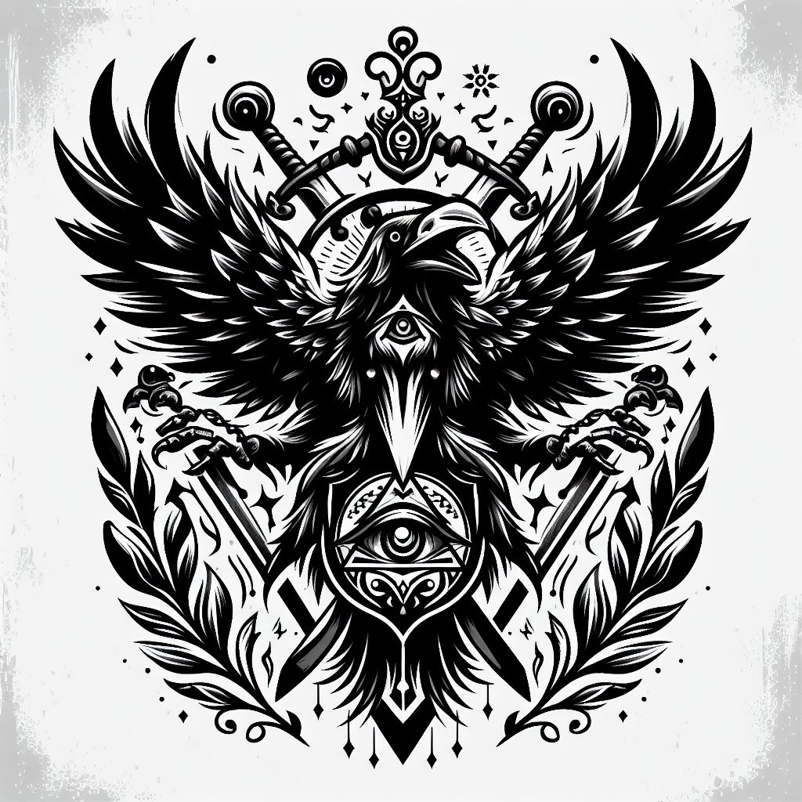
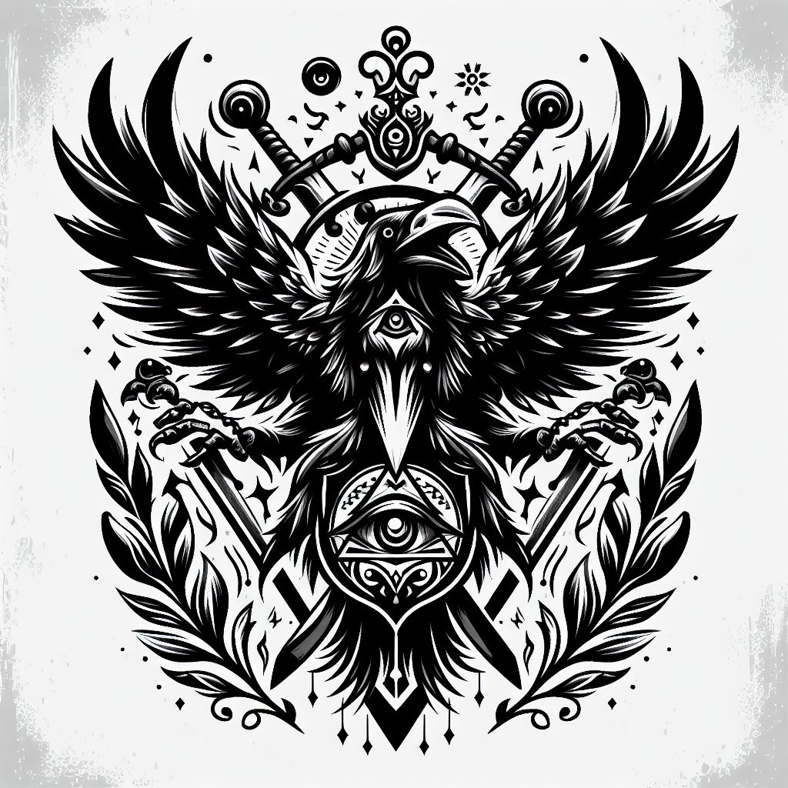
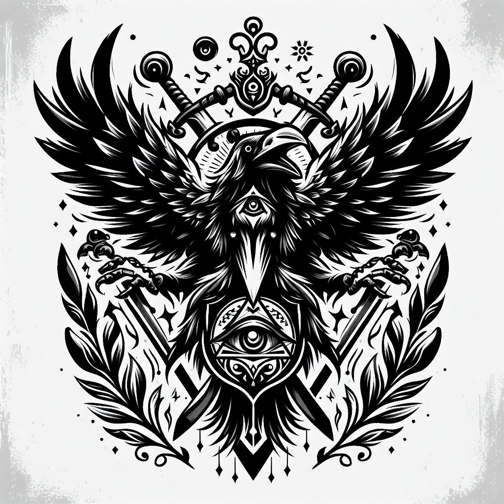

Dutch Schmutsz
Homem branco, alto, cabeça raspada, olhos azuis, cicatriz proxima ao queixo,47 anos
Acrobacia: |Investigação: | Adestramento: |Luta: 5 | artes: |Medicina: | Atletismo: |Ocultismo: | Atualidades: |Percepção: 5 | Ciências: |Pilotagem: | Crime: |Pontaria: 5 | Dipolmacia: |Profissão: | Enganação: |Reflexos: 5 | Fortitude: |Religião: | Furtividade: |Sobrevivência: 5 | Iniciativa: 5 |Tática: | Intimidação: 5 |Tecnologia: | Intuição: |Vontade: | ------------------------------------------- Informações adicionais:
Contatos com o PARANORMAL: Baixo Ultimo NEX registrado: 681-2(15%) Conhecimento sobre o oculto: básico Nível de confiança: Leal Rituais portados: Nenhum Poderes paranormais: Nenhum Conclusão de status = Estavel
Ativ.realizada previamente: Plicial Conhecimento bélico: Treinamento militar Preparo físico: Atlético Preparo mental: mediano Função = Exterminador Comclusão de status = capacitado Local de atuação = Corvus Equipe atual = I.S.A.C-3 Missão atual = loding..... Status = Ocupacionado
Itens em posse: Custos: par de algemas [1]| [ 0,5kg] R$ 35,00 Bandoleira de couro [1]| [0,15kg] R$ 57,41 MP5(mod) [1]| [ 3,0kg] R$135,75 Carregadores(MP5) [4]| [ 6,0kg] R$ 45,10 Machadinha [1]| [ 4,0kg] R$ 90,00 Martelo [1]| [ 3,0kg] R$ 15,00 Binóculo [1]| [ 0,7kg] R$ 30,00 Kit de sobrevivência [1]| [ 7,5kg] R$ 67,50 Máscara de gás [1]| [ 0,6kg] R$ 25,00 Escopeta [1]| [ 2,3kg] R$110,00 Cartuchos [4]| [ 0,8kg] R$ 11,51 4x Peso total = 30,55 kg Custo total = R$ 656,80

3
1
2
1
2
 
